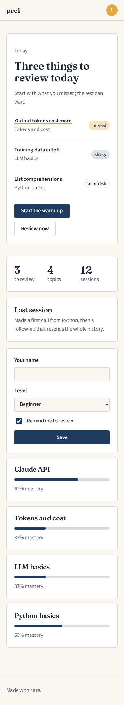
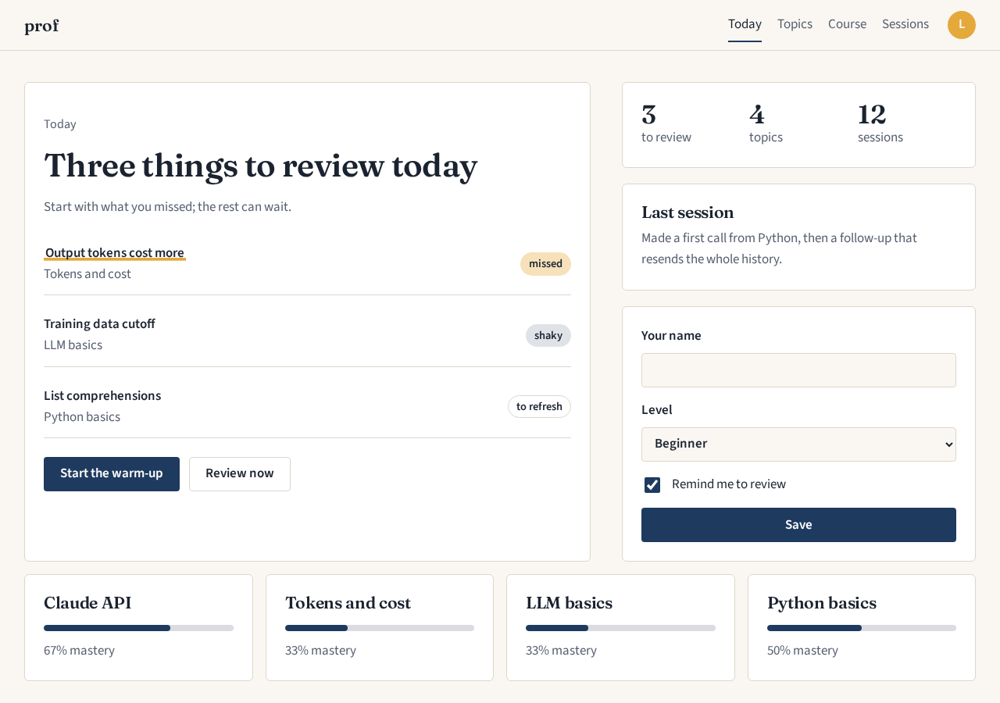
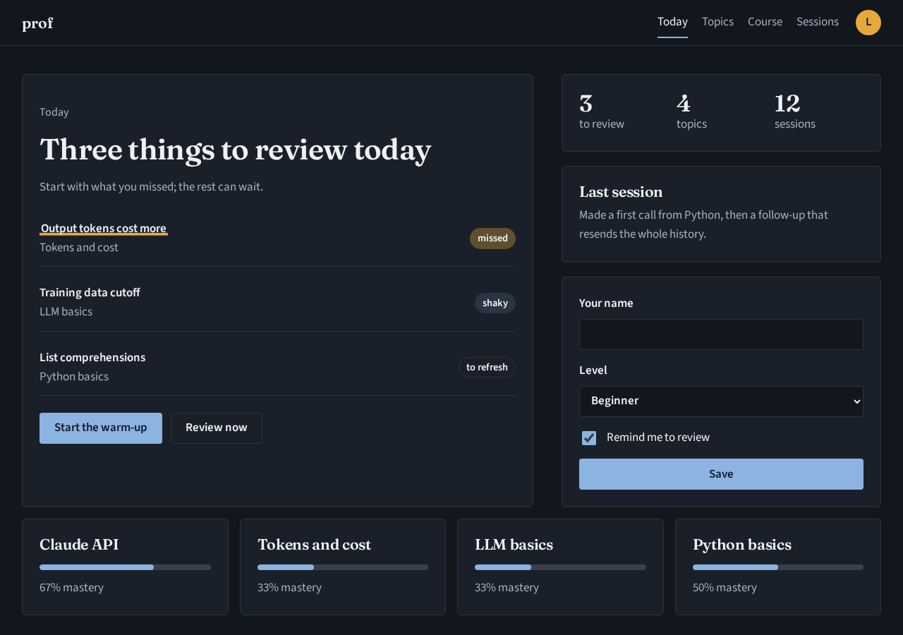
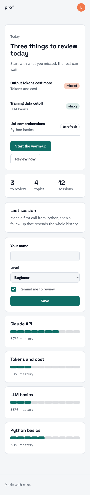
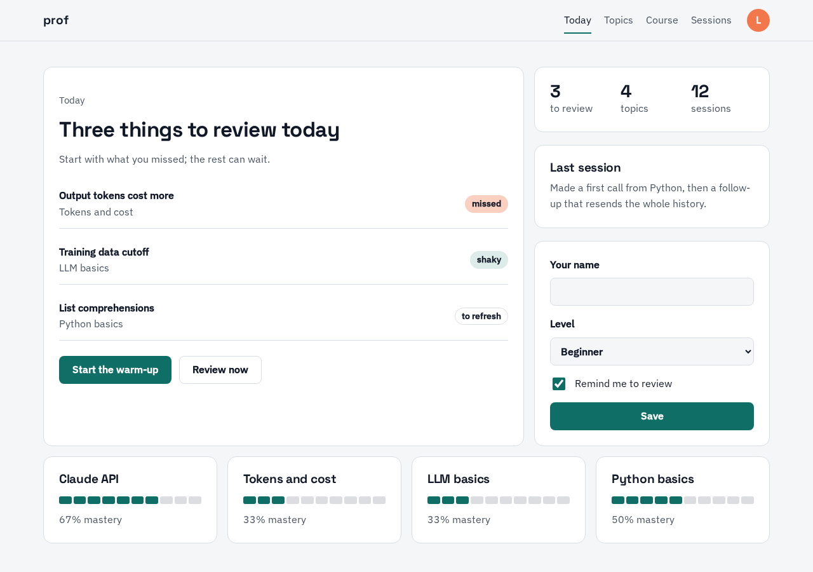
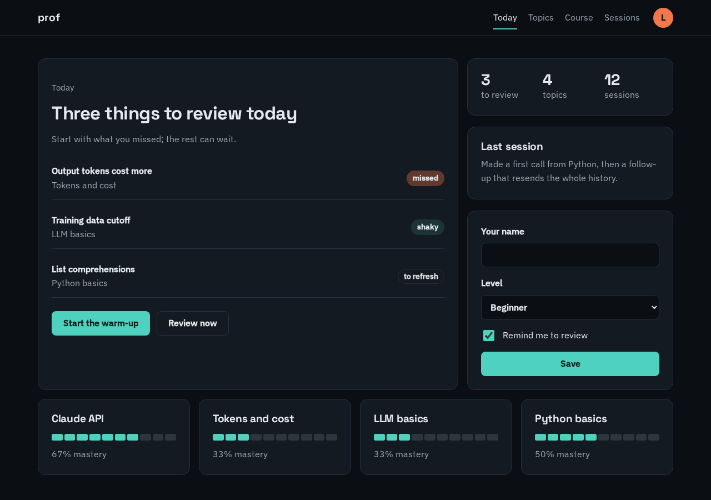
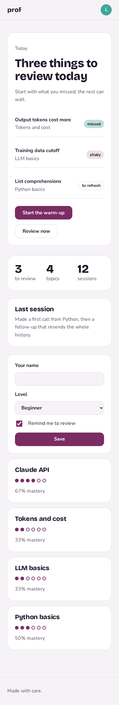
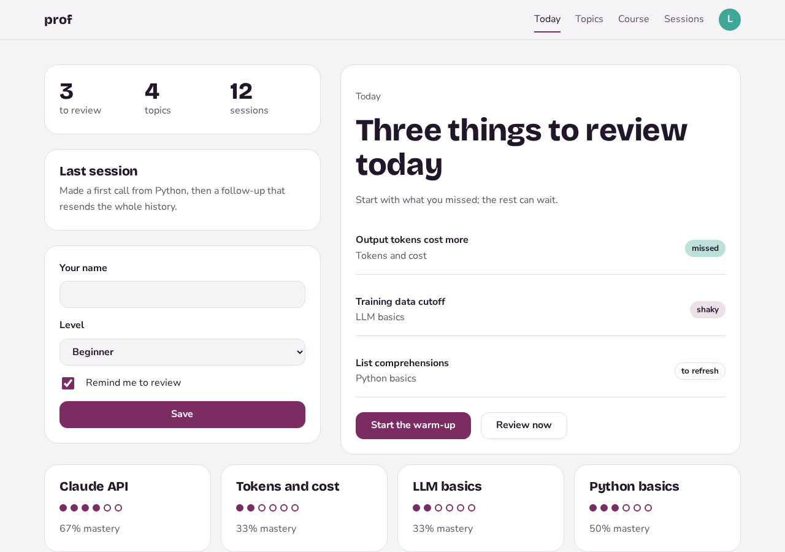
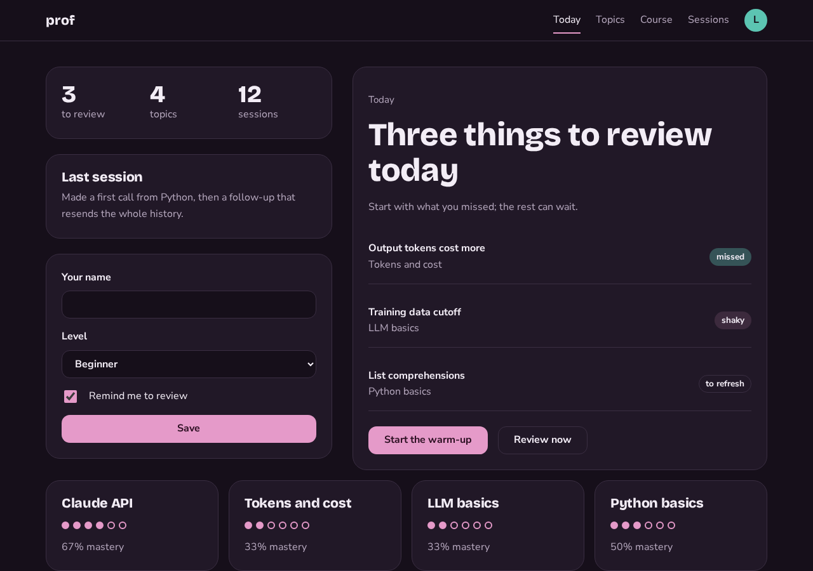

Three directions for prof
For learners from complete beginners to working engineers · feeling: focused and encouraging. Look at each one and tell Claude which you choose (A, B or C), or what you like from each.
Ink and saffron
A well-made notebook: calm serif headings, ink-blue structure and one warm saffron highlight for what to review today. Feels like studying at a good desk.



- Type
- Fraunces for headings, Source Sans 3 for text, IBM Plex Sans Arabic for Arabic · scale 1.25 from 17px
- Colour
- background
#FAF7F2text#1B233014.78:1primary#1F3A5Fbutton text 11.48:1accent#E5A93B - Shape and motion
- 6px corners · 4px spacing grid · editorial layout · calm motion
- Signature
- A saffron underline that draws itself under the one concept to review first (drawn as: underline)
- Checks
- Contrast passes in light and dark; not a known AI look; distinct.
Lab bench
Precise and quick, like a good developer tool: a grotesk with character, a teal signal colour and tidy bento panels for topics and sessions.



- Type
- Space Grotesk for headings, IBM Plex Sans for text, Noto Kufi Arabic for Arabic · scale 1.2 from 16px
- Colour
- background
#F4F6F8text#11182716.37:1primary#0F6E66button text 6.1:1accent#F2784B - Shape and motion
- 14px corners · 4px spacing grid · bento layout · precise motion
- Signature
- Mastery shown as a row of small filled cells, like a test grid turning green (drawn as: cells)
- Checks
- light: border on background is 1.25:1, needs 1.3:1
Plum garden
Encouraging and a little playful: a rounded grotesk, deep plum with a fresh mint, soft big corners. Progress feels like something growing.



- Type
- Bricolage Grotesque for headings, Nunito Sans for text, Tajawal for Arabic · scale 1.333 from 16px
- Colour
- background
#F6F3F7text#22172A15.59:1primary#7B2C63button text 8.81:1accent#3FA796 - Shape and motion
- 22px corners · 8px spacing grid · asymmetric layout · lively motion
- Signature
- Topic cards that grow a leaf for each concept understood (drawn as: dots)
- Checks
- light: border on background is 1.24:1, needs 1.3:1